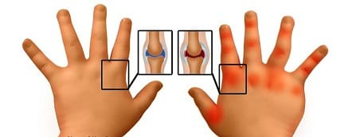
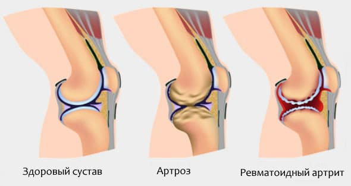
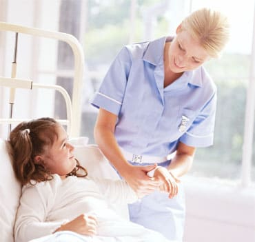
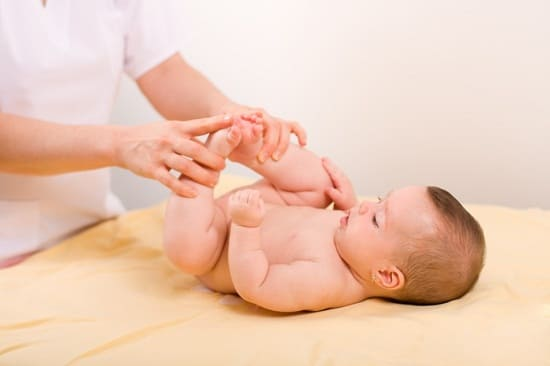
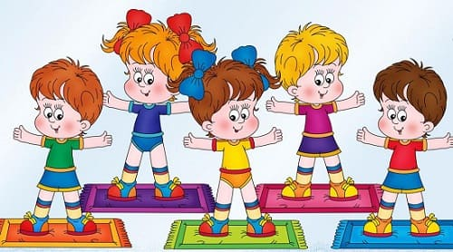
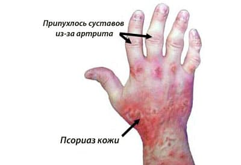

Общим термином «артрит» обозначают боль и припухлость сустава. Наиболее распространенная форма артрита — остеоартрит, часто встречающийся у пожилых людей. Он развивается из-за общего износа сустава наряду с уменьшением хрящевой ткани, которая обеспечивает подвижность сустава. Этот тип артрита редко встречается у молодых людей.
Вторая, менее распространенная форма артрита — это ревматоидный артрит. Несмотря на то что он чаще наблюдается у взрослых, им могут болеть и дети в возрасте от года до 16 лет. Течение ревматоидного артрита у детей сличается от такового у взрослых.
ЮВЕНИЛЬНЫЙ РЕВМАТОИДНЫЙ АРТРИТ (ЮРА)
Эта болезнь чаще поражает девочек, чем мальчиков. Возникает из-за воспалительной реакции в некоторых уставах. По неизвестным причинам специфические клетки, которые участвуют в нормальной иммунной реакции и должны атаковать только чужеродные вещества, атакуют клетки внутри суставов, что вызывает воспалительную реакцию и может привести к повреждению и даже разрушению участков суставных поверхностей. В медицине это называется аутоиммунной реакцией. В США ювенильный ревматоидный артрит развивается примерно у 50—100 детей из 100 000, обычно до 16 лет.
СИМПТОМЫ
Наиболее частые симптомы — боль, покраснение, болезненность или припухлость определенного сустава. Обычно страдают коленные, голеностопные, лучезапястные и суставы пальцев. Дети постарше могут описать дискомфорт в определенном суставе. Дети младше трех лет не в состоянии сообщить о своих проблемах родителям и проявляют их апатичностью, раздражительностью, нежеланием играть. Течение ЮРА очень различается у разных больных. Болезнь может поразить один сустав или медленно прогрессировать, вовлекая все большее количество суставов. Боль и воспаление могут быть только в одном суставе, например, коленном, или в обоих. Для ЮРА специфичны следующие суставные проявления:

СОВЕТ ДОКТОРОВ СИРС: ЛНГ (ЛИХОРАДКА НЕЯСНОГО ГЕНЕЗА) МОЖЕТ СИГНАЛИЗИРОВАТЬ О ЮРА У дошкольников может вначале наблюдаться «лихорадка неясного генеза». У ребенка периодически отмечается повышение температуры тела без каких-либо других симптомов. Хотя обычно такая картина наблюдается при острых респираторных вирусных инфекциях, иногда это может быть признаком ЮРА. |
• тугоподвижность (ригидность) суставов, особенно утром;
• ограничение диапазона движений в суставе;
• суставы горячие на ощупь, опухшие и болезненные;
• боль в пояснице;
• нежелание задействовать определенный сустав;
• замедленный рост или неравномерное развитие рук или ног.
Иногда у детей, помимо артрита, могут быть общие симптомы: волнообразное повышение температуры в течение дня, возможно, сопровождающееся высыпаниями на коже. У некоторых больных могут увеличиваться лимфатические узлы или нёбные миндалины.
ДИАГНОСТИКА И ЛЕЧЕНИЕ
Это заболевание трудно диагностировать, особенно у маленьких детей. Часто диагноз ставится через долгое время, на основании развития заболевания и присоединения всех вышеперечисленных симптомов. Ваш педиатр заподозрит ЮРА, если у ребенка появятся признаки, распространяющиеся на все суставы. Необходимо полное обследование, с акцентом на поврежденные суставы, оценкой боли при движении и диапазона движений в суставе. Для выявления воспаления и повреждения в суставах можно использовать рентгенографию. Анализы крови информативны при подозрении на ЮРА у взрослых, а у детей они обычно отрицательны, даже если у ребенка есть это заболевание.
Лечение ЮРА назначают исходя из тяжести проявлений. В начале заболевания и при умеренно тяжелом течении обычно используют противовоспалительные средства. В более тяжелых случаях или, когда есть признаки прогрессирования болезни назначают другие препараты, наподобие используемых при лечении ревматоидного артрита у взрослых. Таких больных обычно наблюдает детский ревматолог.

Что вы можете сделать, чтобы облегчить боль в пораженном суставе или суставах.
Укрепите мышцы. Физиотерапия и лечебная физкультура могут быть полезным дополнением к медикаментозному лечению. Медицинская теория гласит: сустав силен настолько, насколько сильны поддерживающие его мышцы. С помощью физиотерапевта разработайте комплекс упражнений на укрепление мышц вокруг наиболее поврежденных суставов и поощряйте ребенка их выполнять.
Следите за весом своего ребенка. Избыток жира и лишний вес тремя способами повреждают и так уже воспаленные суставы:
Позволяйте суставам работать. ЮРА протекает с «ремиссиями» и «обострениями» — это означает, что на какое-то время симптомы болезни уходят и ребенок выглядит совершенно здоровым, а затем болезнь периодически возвращается. Во время ремиссий извлеките выгоду из правила сохранения здоровья мышц, костей и суставов: используй или потеряешь их. Посоветуйтесь с детским и спортивным врачом и отведите ребенка в секцию того вида спорта, где поврежденные суставы будут максимально много двигаться.
Накачайте суставы. Все суставные поверхности в теле ребенка окружены естественной смазкой — синовиальной жидкостью, которая действует как масло в цилиндрах двигателя. Помимо роли смазки она также действует как амортизатор и как средство доставки питательных веществ к хрящу. Одно из наиболее эффективных упражнений специально для коленей — это посадить ребенка так, чтобы его ноги примерно на фут не доставали до пола, и пусть он поднимает и опускает ногу, сгибая ее в колене, или болтает ногами вверх-вниз. Такое упражнение — «накачай это» — можно делать со всеми суставами. Сгибание-разгибание, как насос, заставляют синовиальную жидкость двигаться по суставным поверхностям, омывая воспаленные участки, смазывая, питая и восстанавливая их с помощью содержащихся в ней веществ.

СОВЕТ ДОКТОРОВ СИРС: ПЛАВАНИЕ НАДУВАЕТ СПАСАТЕЛЬНЫЙ КРУГ ДЛЯ РАЗДУТЫХ СУСТАВОВ Одно из самых безопасных и эффективных упражнений при артрите — плавание. Плавать зачастую можно даже во время внезапного обострения или усиления ЮРА. При этом суставы активно двигаются, а нахождение в воде снижает избыточную нагрузку на них за счет плавучести, уменьшая тем самым износ воспаленных суставов. Ревматолог, наблюдающий вашего ребенка, и физиотерапевт объяснят вам, когда суставам надо отдыхать, а когда — двигаться. |
Накормите суставы. Прочитайте, как еда влияет на воспаление, особенно омега-3 полиненасыщенные жирные кислоты, и ознакомьтесь со списком противовоспалительных продуктов. Убедитесь, что ваш ребенок получает достаточно кальция для роста костей. Долгосрочные исследования показали, что прочность кости закладывается в основном в первые годы жизни. У детей и подростков с крепкими костями меньше вероятность заболеть артритом в пожилом возрасте. Эти исследования наводят на мысль о том, что в молодости дополнительное введение кальция полезнее для костей, чем в старости.
Отдаленный прогноз. К счастью, примерно у 75% детей с ЮРА болезнь заканчивается полной ремиссией с минимальными деформациями и ограничением движений в суставах. Тем не менее у некоторых детей бывают периодические обострения заболевания. У детей и подростков с тяжелой формой ЮРА есть риск развития его в ревматоидный артрит в более старшем возрасте.
Это болезнь роста или нечто худшее? Мы часто видим у себя в кабинете детей с жалобами на боли в суставах. Обычно в этом нет ничего страшного, и мы можем заверить родителей, что это — вариант нормального процесса роста ребенка. Болезнь роста существует и поражает многих детей. Она возникает, когда зоны роста в суставах (особенно в коленных, голеностопных и бедренных) проходят периоды всплесков роста. Как правило, у детей с болезнью роста нет столь тяжелых симптомов, как у детей с ЮРА. Мы рассказываем пациентам, как искать предупреждающие сигналы, такие как боль и утренняя тугоподвижность, припухание или деформации суставов, или замедленный рост. Кроме этого, дети с болезнью роста обычно не тяготятся этим состоянием. Дети же ЮРА настолько страдают от болезни, что их образ жизни сильно меняется. Конечно, вы в любом случае должны показать ребенка, жалующегося на боль в одном или нескольких суставах, врачу .

СЕПТИЧЕСКИЙ АРТРИТ
Он редко развивается у детей, но когда развивается, то его считают тяжелым заболеванием. В сущности — это инфекция, заключенная в пространство сустава, и она может поразить любой сустав. Чаще всего страдают колени и тазобедренные суставы. Обычно в суставе образуется гнойник, хотя возможно и разрушение сустава. Септический артрит может вызывать следующими причинами:
Проникающее ранение. Довольно редкая причина может привести к нагноению в суставе при травме или неправильно выполненной функции сустава.
Сепсис. Бактерии могут попасть в сустав с кровью и вызвать септический артрит. У ребенка будут симптомы секционного процесса: лихорадка, сонливость, он будет выглядеть очень больным и может жаловаться на боль в определенном суставе.
Болезни, передающиеся половым путем. Иногда бактерии, вызывающие гонорею, — гонококки — разносятся по всему телу и проникают в суставы, особенно в коленные.
ЛЕЧЕНИЕ
Эта тяжелая инфекция требует стационарного лечения. Используются антибиотики Ⅳ поколения, часто прибегают к хирургическому дренажу гнойника.
ПСОРИАТИЧЕСКИЙ АРТРИТ
Псориаз — относительно часто встречающееся заболевание кожи у детей и взрослых. Первое причина его неизвестна, но предполагают, что это «заболевание аутоиммунной природы», когда иммунная система атакует собственные же клетки кожи. При этом на коже часто образуются доставляющие массу неудобств болезненные чешуйчатые высыпания. Оно редко встречается у маленьких детей, но у трети больных псориазом заболевание впервые проявилось в возрасте младше пятнадцати лет. У некоторых пациентов помимо кожных появлений развивается глубокое поражение суставов — псориатический артрит. Причина этого также неизвестна.

ВОСПАЛИТЕЛЬНЫЕ ЗАБОЛЕВАНИЯ КИШЕЧНИКА
У пациентов с воспалительными заболеваниями кишечника, например болезнью Крона или неспецифическим язвенным колитом, также могут развиваться симптомы артрита.
Здоровье ребенка от докторов Сирс / Сирс У. и др.